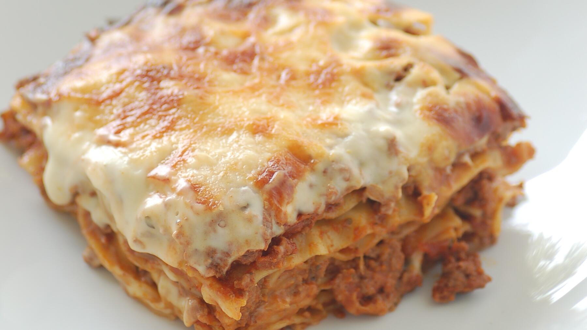

Zurück zur Übersicht
Lasagne wie beim Italiener
Mit lange eingekochtem Ragù, selbstgemachter Béchamel und goldbrauner Käsekruste.
- Zeit
- 1 Std.
- Schwierigkeit
- mittel
- Kategorie
- Pasta
- Ernährung
- mit Fleisch
Zutaten
Portionen
Für die Bolognese
- Olivenöl
- 500 gGemischtes Hackfleisch
- 1Zwiebel
- 2Knoblauchzehen
- 1Bund Petersilie (oder TK)
- 1 ELTomatenmark
- 1 DoseGeschälte Tomaten (800 g)
- Etwas Rotwein
Für die Béchamelsoße
- 0,5 lMilch
- 30 gButter
- 40 gMehl
- Salz und Pfeffer
- Zitronensaft
- Muskat
Außerdem
- Butter für die Form
- 300 gLasagneplatten
- Geriebener Käse nach Belieben
Zubereitung
- Für das Ragù Olivenöl in einem Topf erhitzen und das Hackfleisch darin rundherum anbraten. Gehackte Zwiebel und Petersilie dazugeben, Knoblauch in feinen Scheiben und Tomatenmark einrühren und mitbraten.
- Mit den Dosentomaten aufgießen, salzen, pfeffern und nach Belieben Rotwein dazugeben. Ohne Deckel mindestens 30 Minuten einkochen lassen.
- Für die Béchamel Butter in einem kleinen Topf schmelzen, das Mehl mit dem Schneebesen einrühren und hellgelb anschwitzen. Milch dazugießen und glatt rühren. Falls Klümpchen bleiben, die Soße durch ein feines Sieb streichen.
- Béchamel knapp 30 Minuten auf kleiner Flamme köcheln lassen, damit der Mehlgeschmack verschwindet. Mit Salz, Pfeffer, Zitronensaft und etwas Muskat abschmecken.
- Eine gebutterte, ofenfeste Form mit etwas Ragù ausstreichen. Abwechselnd Lasagneplatten, Ragù und Béchamel einschichten, bis die Form voll ist. Die oberste Schicht ist Béchamel.
- Dick mit geriebenem Käse bestreuen, Butterflöckchen daraufsetzen und im heißen Ofen bei 180 °C Umluft 30–40 Minuten backen, bis die Kruste goldbraun ist.
Tipp: Die Lasagne lässt sich gut am Vortag vorbereiten.